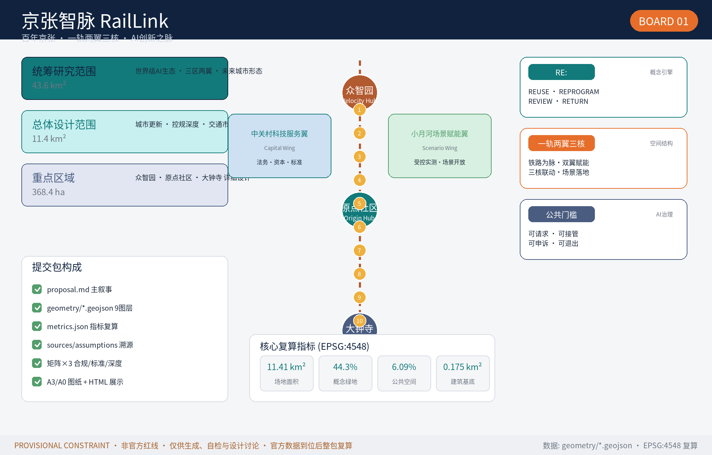
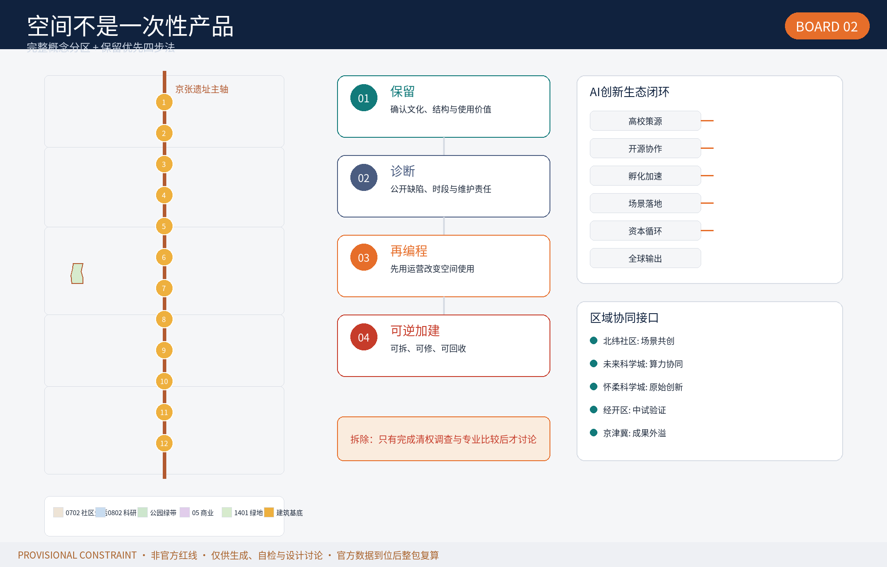
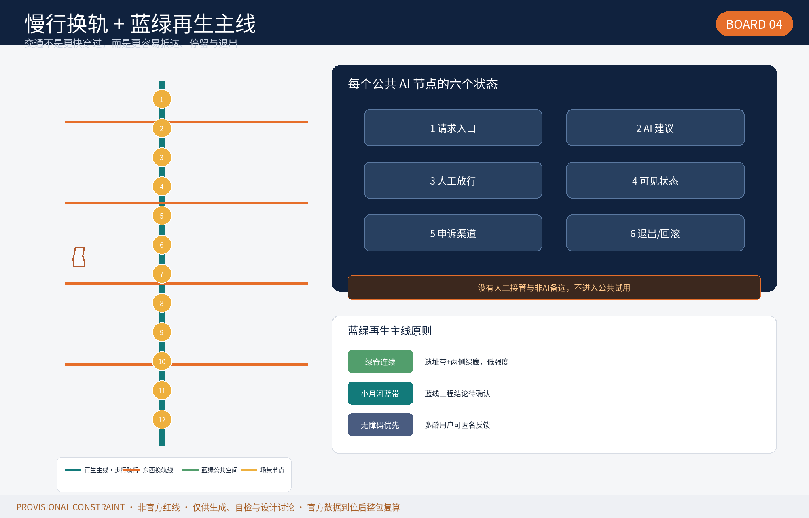
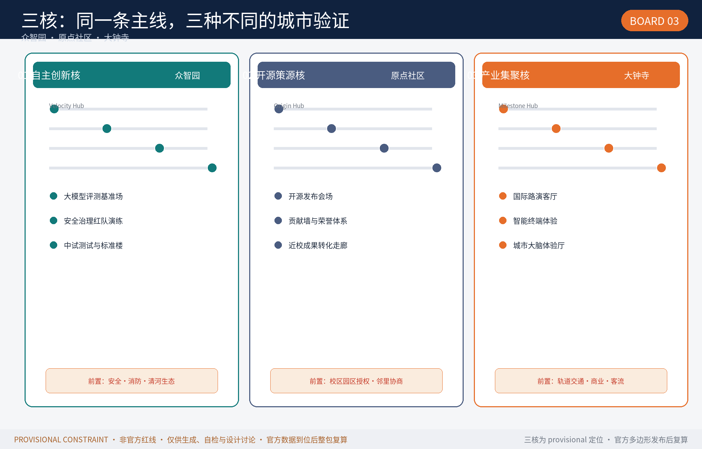
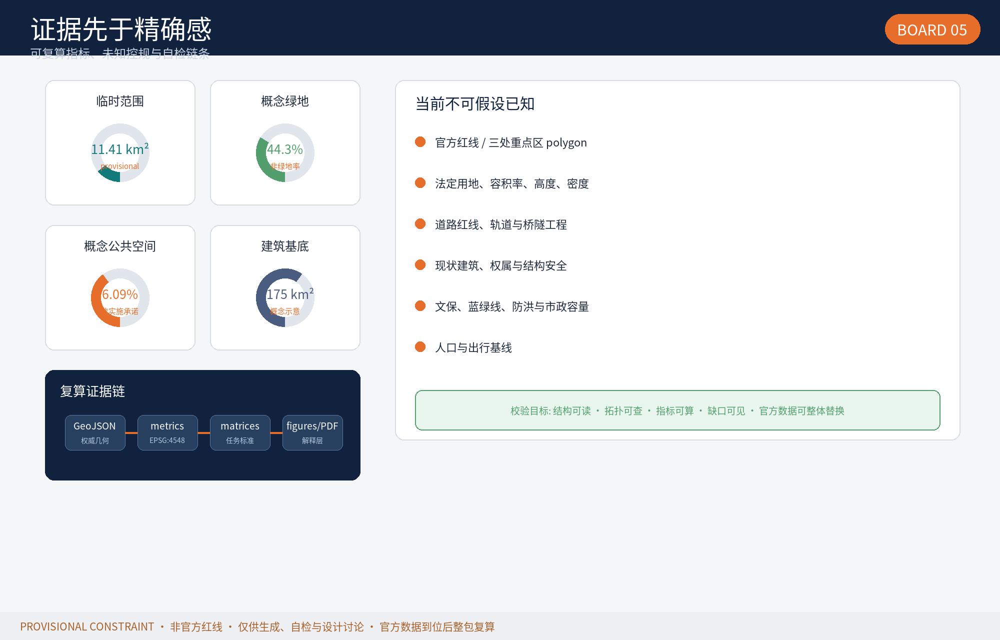

AI全栈自主创新加速区：创新引擎+生态绿心。公共中试测试验证楼、大模型评测基准与安全沙盒、推理算力展示馆；清河界面公共广场；北五环门户交通组织。
开源策源地与成果转化第一站：开源广场+贡献墙+发布厅。高校-园区创新走廊、开源发布会场、黑客马拉松、AI人才服务；校区园区无边界慢行缝合。
AI应用与产业集聚、智能商务与消费体验结合：站城一体TOD+国际会议中心。地铁通道改步行公共廊道（四象限连通）、智能零售体验、企业总部、AI灯塔城市地标。
| # | 场景 | 空间映射 | 类型 |
|---|---|---|---|
| 01 | 开源发布会场 | 原点社区开放发布厅 | 运营 |
| 02 | 高校创新走廊/时间研究工作室 | 众智园公共中试楼 | 运营 |
| 03 | 大模型评测基准场地 | 众智园 | 测试验证 |
| 04 | 安全治理体验馆（红队演练） | 众智园 | 测试验证 |
| 05 | 城市开放场景（交通/医疗AI辅助） | 小月河走廊示范区 | 测试验证 |
| 06 | AI导览（京张铁路历史+AI） | 遗址带沿线 | 文化 |
| 07 | 智能导航手车 | 交通枢纽展点 | 交通 |
| 08 | 智慧零售（沉浸式智能店） | 大钟寺商业区 | 商业 |
| 09 | AI法律咨询（人工复核） | 法律服务点 | 公共 |
| 10 | 城市大脑体验厅（数据治理） | 大钟寺 | 治理 |
主线："从百年第一条自主设计铁路，到世界级AI策源之城"。三线交织：历史（京张铁路）、创业（中关村开源）、未来（AI朝圣）。串联"北京北站→原点→众智园→大钟寺"的智脉之旅，让铁轨上的每一站都成为AI时代的里程碑。
| 机制 | 设计 |
|---|---|
| 年度活动体系 | 开源发布会（月度）· 京张智脉高峰论坛 · 铁路文化节 · AI灯塔之夜 · 创新训练营 |
| 开发者社区 | 积分-徽章-成长体系 + 贡献墙荣誉空间 + 线上协作与线下空间联动 |
| 国际传播 | 京张叙事国际版 · 年度"智脉奖" · 双语传播 |
| 转化路径 | 参与(体验) → 贡献(开源) → 驻留(孵化) → 落地(企业) → 生态(联盟) |
| 实施分期 | 一期：原点+大钟寺（轻资产先行）· 二期：众智园中试平台 · 三期：TOD慢行体系 |
| 编号 | 项目（概念） | 分期 |
|---|---|---|
| P-01 | 原点社区来源广场与发布厅 | 一期 PHASE-001 |
| P-02 | 大钟寺四象限站前广场 | 一期 PHASE-001 |
| P-03 | 轨道贯穿步道（慢行主轴） | 二期 PHASE-002 |
| P-04 | 小月河翼场景走廊首段 | 二期 PHASE-002 |
| P-05 | 众智园清河界面启动区 | 三期 PHASE-003 |
| P-06 | 中试测试与标准治理楼 | 三期 PHASE-003 |
| 类别 | 覆盖 |
|---|---|
| 官方公告任务 1.3 / 1.4 / 1.5 | ✓ 全部覆盖（compliance_matrix.json） |
| agent.1–agent.6 六项智能体任务 | ✓ 命名/生态/场景/地标/文化/运营 |
| 专业标准 mandatory | ✓ 5 项强制标准（standard_matrix.json） |
| 设计深度项 | ✓ 15 项 complete（design_depth_matrix.json） |
| AI场景卡 / 用户画像 | ✓ 10 卡（3测试）/ 5 类 |
| AI朝圣地标 | ✓ 3 个（记忆月台/贡献墙/AI灯塔） |
| 检查项 | 结果 |
|---|---|
| 确定性校验 deterministic | ✓ PASS |
| 空间复核 spatial | ✓ PASS（provisional key area 已警示） |
| 视觉打包 visual | ✓ PASS |
| 专业证据 professional | ✓ PASS |
| 边界声明 | provisional_constraint 已双警示 |
官方公告 [OFFICIAL-ANNOUNCEMENT] · 任务书 [AGENT-TASKBOOK] · 临时边界 [BOUNDARY-SOURCE] · site-package [SITE-PACKAGE] · 资料登记 [SOURCE-REGISTRY] · 案例研究 [CASE-STUDIES]
所有资料公开或清权；provisional 边界仅用于讨论，official_boundary=false。
① 空间基于 provisional 临时边界，官方红线发布后全量复算；② 容积率/建筑高度/密度/退线待官方控规，metrics.json 标记 unknown；③ 现状建筑/道路/市政/文保控制范围尚未取得；④ 所有活动/招商/资金/政策为概念建议，不构成政府审定结论。
